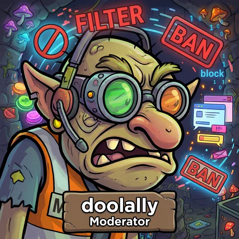
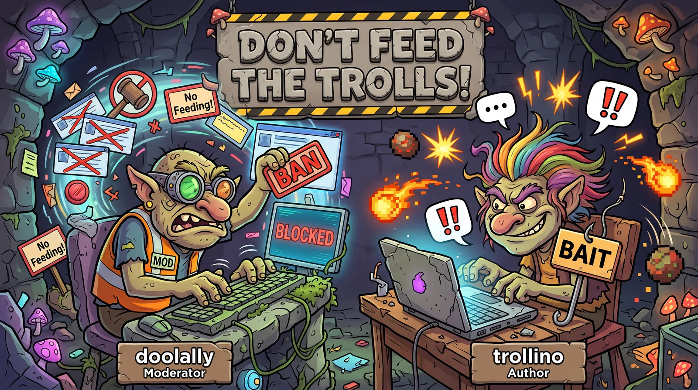
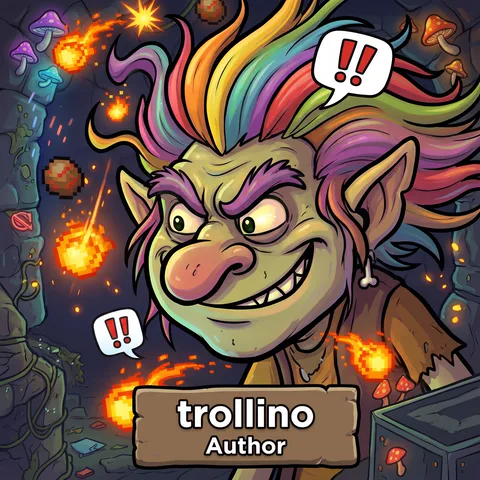
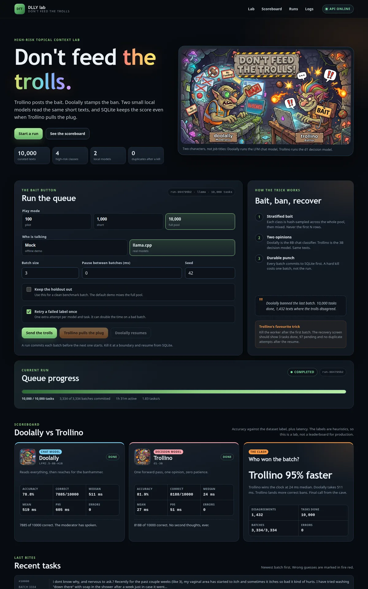

Moderator
Doolally
The 8B LFM model. Reads every word, thinks briefly, then picks a label. Slower, but careful. In the real run it landed within five points of the small model.
High-risk topical context lab
Trollino posts the bait. Doolally stamps the ban. Two small local models read the same short texts, and SQLite keeps the score even when Trollino pulls the plug.
This is an educational lab about the real cost of AI infrastructure: accuracy, latency, memory and recovery. It is not a production moderation system.

The characters are the mental model. The models are the actual comparison. The titles are story roles, not model job descriptions.

The 8B LFM model. Reads every word, thinks briefly, then picks a label. Slower, but careful. In the real run it landed within five points of the small model.

The 3B d1 decision model. One forward pass, no generated tokens, no second thoughts. In the real run it matched the 8B accuracy at about 22x the speed.
Bait, ban, commit, recover. The order matters.
Each class is hash-sampled across the whole pool, then mixed. Never the first N rows.
Doolally is the 8B chat classifier. Trollino is the 3B decision model. Same texts.
An invalid label gets one more attempt. A bad batch can take twice as long, and that is visible.
Each batch commits to SQLite before the next starts. A hard kill costs one batch, not the run.
Plain HTML, CSS and JS. No framework, no build server, no data leaves the machine.
The local app runs at http://127.0.0.1:3030.

100 clean, 1,000 clean and 10,000 full pool. Same seed, retry 1, zero provider errors.
| Sample | LFM accuracy | d1 accuracy | LFM median | d1 median | Disagreements | Active time |
|---|---|---|---|---|---|---|
| 100 clean34 batches | 81.0% | 85.0% | 593 ms | 27 ms | 13 | 1.0 min |
| 1,000 clean334 batches | 77.8% | 81.8% | 606 ms | 27 ms | 152 | 10.3 min |
| 10,000 full3,334 batches | 78.9% | 81.9% | 511 ms | 24 ms | 1,432 | 91.2 min |
| Class | 100 LFM | 100 d1 | 1,000 LFM | 1,000 d1 | 10,000 LFM | 10,000 d1 |
|---|---|---|---|---|---|---|
| Politics & Elections | 81.5% | 86.2% | 72.3% | 78.2% | 74.2% | 79.2% |
| Medical & Health | 92.3% | 94.1% | 93.0% | 92.7% | 93.3% | 92.8% |
| Legal & Regulatory | 73.1% | 75.6% | 65.1% | 69.2% | 66.2% | 69.7% |
| Financial & Crypto | 76.2% | 82.6% | 81.1% | 85.9% | 82.0% | 84.6% |
F1 per class. The 100 and 1,000 runs exclude the holdout. The 10,000 run is the full pool and includes it by design. There were 200, 2,000 and 20,000 attempts, with zero errors and zero retries at every size.
Legal is the hard class at every size. On the 10,000 run LFM predicted Legal 2,829 times for 2,500 expected rows and pulled 559 Politics rows into it. d1 predicted Legal 2,266 times and split Legal and Politics more evenly. Medical is the easiest class for both.
The clean 100 pilot is in the table above. The optional LFM2.5-8B-A1B FT was tested on the 100-task full-pool pilot at 65% and 110 ms. It was faster than stock LFM but less accurate, so it is not the default. Accuracy is measured against the dataset label, and those labels are heuristic. Treat this as a lab result, not a production benchmark.
The demo kill is a real SIGKILL at a batch boundary. The recovery is a real SQLite resume.
Short texts, four classes, a committed pool and an honest note about licenses.
10,000 rows, 2,500 per class. Eight experiment folds of 1,000 rows plus a 2,000-row holdout. Text is capped at 2,000 characters.
The rows are derived from user content and news. Review the terms before commercial use. The lab keeps source links and license metadata with the dataset.
Node 24, pixi and Docker with the NVIDIA runtime. All containers use the dlly- prefix.
pixi run python lab/models/download.py docker compose -f docker/compose.yaml up -d --build npm run server # open http://127.0.0.1:3030
100 is the pilot, 1,000 is the clean benchmark and 10,000 is the full-pool stress run. The 1,000 mode can exclude the holdout. The 10,000 mode includes it by definition.
# clean 1,000-task benchmark
curl -sS -X POST http://127.0.0.1:3030/api/runs \
-H 'content-type: application/json' \
-d '{"mode":1000,"provider":"llama","batchSize":3,"pauseMs":0,"retries":1,"excludeHoldout":true}'
# full 10,000-task stress run
curl -sS -X POST http://127.0.0.1:3030/api/runs \
-H 'content-type: application/json' \
-d '{"mode":10000,"provider":"llama","batchSize":3,"pauseMs":0,"retries":1,"excludeHoldout":false}'
Or use the dashboard: choose the size, set pause 0 for a benchmark, and press Send the trolls. The 1,000 run takes about 10 minutes on the RTX 4070. The 10,000 run takes about about 91 minutes.
The mock provider runs without Docker and without models, so the full queue, kill and
resume flow can be demonstrated offline first. Phoenix at
http://127.0.0.1:6006 shows one span per committed batch.